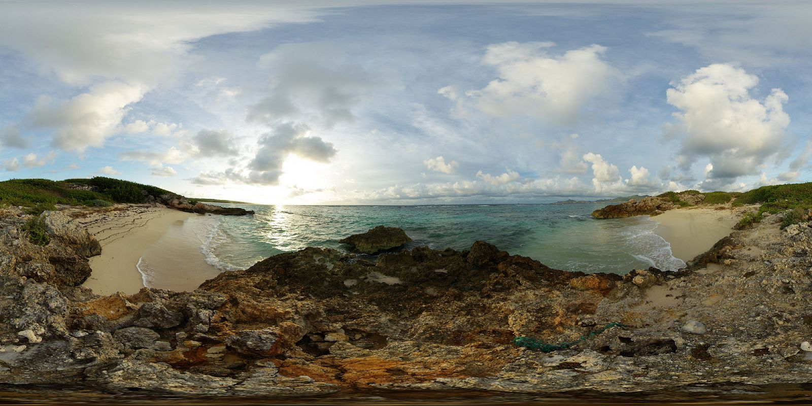
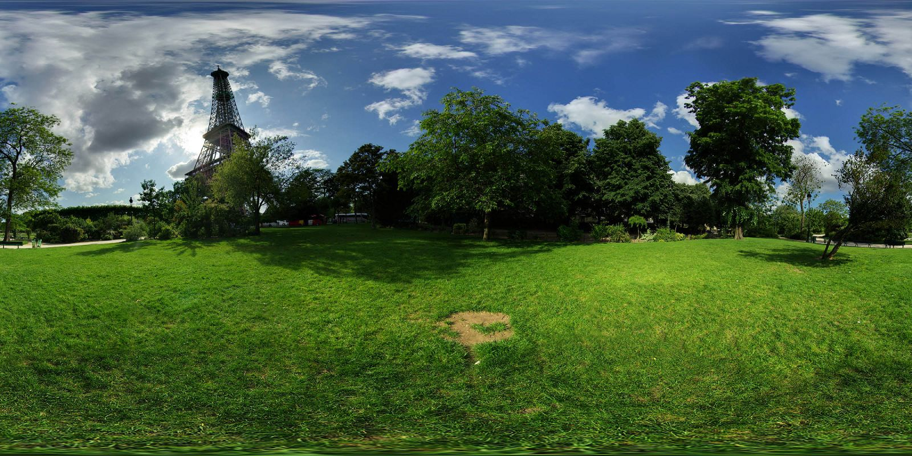
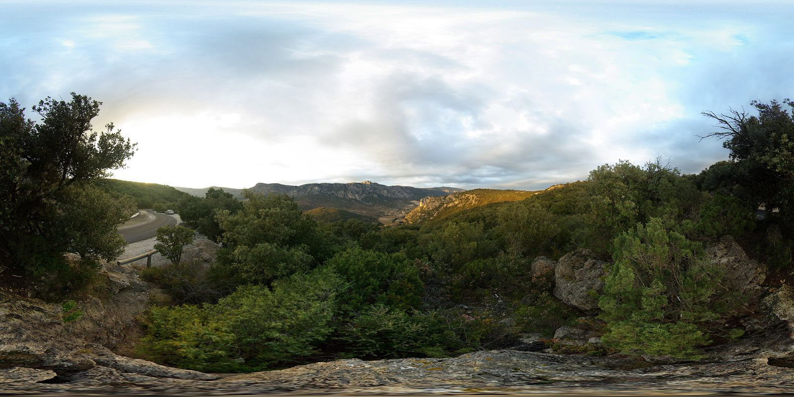

<!DOCTYyutPE html>
<html>
<head>
    <meta charset="utf-8">
    <title>JavaScript - A-Frame School</title>
    <meta name="description" content="JavaScript - A-Frame School">
    <link rel="stylesheet" href="loaders.css/loaders.min.css">
    <style>
        #preloader {
            position: fixed;
            z-index: 1000;
            width: 100%;
            height: 100%;
            top: 0;
            left: 0;
            background: rgba(0, 0, 0, .5);
        }

        #preloader > div {
            position: absolute;
            top: 50%;
            left: 50%;
            transform: translate(-50%, -50%);
        }
    </style>
</head>

<body>

<div id="preloader">
    <div>
        <div class="ball-clip-rotate-multiple"><div></div><div></div></div>
    </div>
</div>

<!--

1. 第一步：创建各个场景模板

引入模板相关的插件 aframe-template-component

创建场景。

2. 添加鼠标点击以及设置事件插件

引入相关插件 aframe-mouse-cursor-component，
aframe-event-set-component。

这里有两种设置事件的方式，一种是注册组件set-entity，一种是使用插件aframe-event-set-component，通过设置event-set__click来实现。

<a-sphere class="clickHandle" color="red" position="-1 5 -10"
                   event-set__click="_event: click; _target: #entity; template.src: #tpl3"></a-sphere>

3. 显示与隐藏光标

4. 创建转场动画

方式一：属性设置

方式二：js初始化设置

使用aframe-animation-component插件和原生a-animation都有bug，所以暂时不用这个来做转场动画。另想办法。

5. 监听图片加载完成

成功监听后，可以设置加载动画了。
-->


<script src="./aframe/aframe.min.js"></script>
<script src="./aframe/aframe-template-component.min.js"></script>
<script src="./aframe/aframe-event-set-component.min.js"></script>
<script src="./aframe/aframe-mouse-cursor-component.min.js"></script>
<script src="./aframe/aframe-animation-component.min.js"></script>

<script>

    AFRAME.registerComponent('set-entity', {
        schema: {
            on: {type: 'string'},
            target: {type: 'selector'},
            tpl: {type: 'string'},
            // skyImg: {type: 'string'}
        },

        init: function () {
            var data = this.data;
            var el = this.el;

            var preloader = document.querySelector('#preloader');

            // 试着去掉注释，体验一下预先加载img
            // var sky = document.querySelector('#sky');

            // this.setupFadeAnimation();

            el.addEventListener(data.on, function () {

                preloader.style.display = 'block';

                // 模拟网络延迟
                setTimeout(function () {
                    // sky.setAttribute('src', data.skyImg);
                    data.target.setAttribute('template', 'src', data.tpl);

                    console.log(data.target, data.target.querySelector('a-sky'));
                }, 300);
            });
        },

        /**
         * Setup fade-in + fade-out.

        setupFadeAnimation: function () {
            var data = this.data;
            var targetEl = this.data.target;

            // Only set up once.
            if (targetEl.dataset.setImageFadeSetup) { return; }
            targetEl.dataset.setImageFadeSetup = true;

            // Create animation.
            targetEl.setAttribute('animation__fade', {
                property: 'material.color',
                startEvents: 'set-image-fade',
                dir: 'alternate',
                dur: data.dur,
                from: '#FFF',
                to: '#000'
            });
        }
        */
    });


    // 监听实体里面的资源加载完成 参考：https://stackoverflow.com/questions/41519508/aframe-add-preloader-to-image-loading-in-sky/45109736#45109736
    AFRAME.registerComponent('loaded', {
        init: function () {

            var el = this.el;

            var preloader = document.querySelector('#preloader');

            el.addEventListener('materialtextureloaded', function () {
                preloader.style.display = 'none';

                console.log('加载完了', el.querySelector('a-sky'));
            });
        }
    });

</script>

<script>
    // 监听是否进入vr模式，只有进入vr模式，才添加光标
    AFRAME.registerComponent('scenelistener',{
        init:function(){
            var cursorWrap = document.querySelector('#cursorWrap');
            var cursor = document.createElement('a-cursor');
            cursor.setAttribute('color', 'yellow');
            this.el.sceneEl.addEventListener('enter-vr',function(){
                cursorWrap.appendChild(cursor);
            });
            this.el.sceneEl.addEventListener('exit-vr',function(){
                cursorWrap.removeChild(cursor);
            });
        }
    });
</script>


<a-scene scenelistener>

    <a-assets>

        <!--如果以这种方式先设置好img，会导致预先加载，初始加载会变慢，所以我在实际应用上，不使用这种方式。-->
        <!--
        
        
        
        -->

        <script id="tpl1" type="text/html">
            <a-sky src="./assets/img/01.jpg"></a-sky>
            <a-box class="clickHandle" color="red" position="-1 0 -5"
                   set-entity="on: click; target: #entity; tpl: #tpl2; skyImg: #img2"
                   event-set__1="_event: mousedown; scale: 1 1 1"
                   event-set__2="_event: mouseup; scale: 1.2 1.2 1"
                   event-set__3="_event: mouseenter; scale: 1.2 1.2 1"
                   event-set__4="_event: mouseleave; scale: 1 1 1"></a-box>
        </script>
        <script id="tpl2" type="text/html">
            <a-sky src="./assets/img/02.jpg"></a-sky>
            <a-sphere class="clickHandle" color="red" position="-1 5 -10"
                      set-entity="on: click; target: #entity; tpl: #tpl3; skyImg: #img3"></a-sphere>
        </script>
        <script id="tpl3" type="text/html">
            <a-sky src="./assets/img/03.jpg"></a-sky>
            <a-cylinder class="clickHandle" color="red" position="5 0 -5"
                      set-entity="on: click; target: #entity; tpl: #tpl1; skyImg: #img1"></a-cylinder>
        </script>
    </a-assets>

    <!--试着去掉注释，体验一下预先加载img-->
    <!--<a-sky id="sky" src="#img1"></a-sky>-->

    <!--容器-->
    <a-entity loaded id="entity" template="src: #tpl1"></a-entity>

    <!--光标-->
    <a-camera id="cursorWrap" mouse-cursor></a-camera>

</a-scene>

</body>

</html>